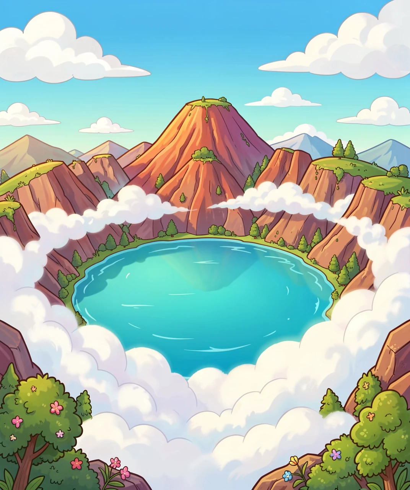
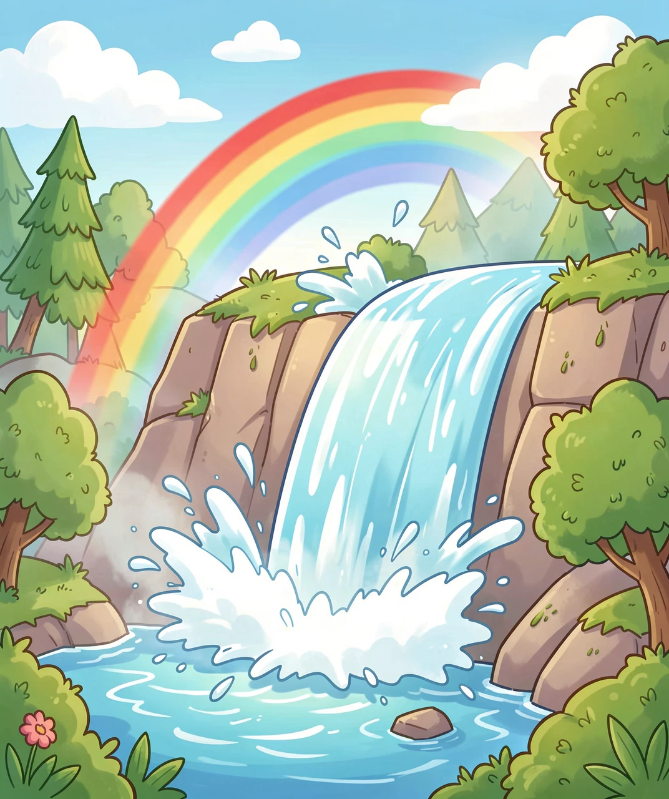
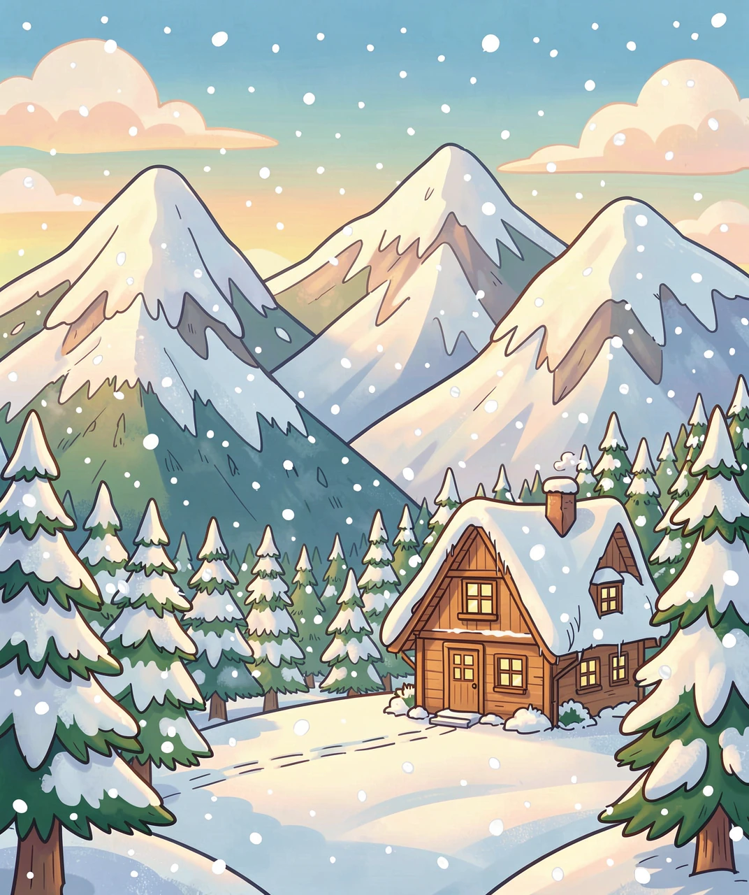
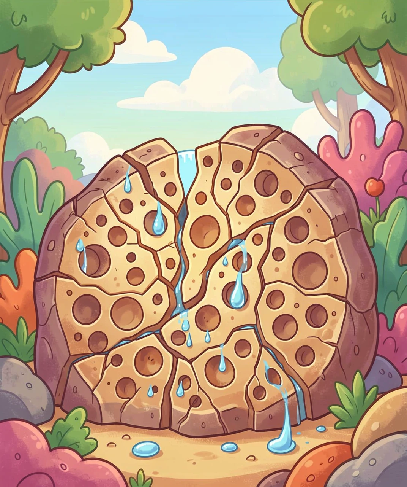

一座会「造水」的神奇火山

在吉林省和朝鲜的交界处，有一座高高的山，山顶上躺着一汪巨大的水，它叫「天池」。天池有多大？它像 9 个西湖加起来那么大！最深处超过 370 米，比 100 层楼还高。更神奇的是，天池悬在 2000 多米高的山顶上，四周都是火山岩壁，没有河流流进来，却永远满满的。
小朋友，如果让你在山顶放一个脸盆，下雨能接满，但天不下雨的时候，脸盆很快就会干。可天池为什么一年到头都是满的？它的水到底从哪儿来？让我们一起去寻找答案！
科学家们发现了一个大秘密：天池没有河流进来，却有一条瀑布流出去！在长白山的北坡，天池的水从缺口冲出，形成了长白瀑布，落差 68 米，是松花江的源头。水一直流，天池却不干，这怎么可能呢？
原来，天池的水量一直在悄悄变化。丰水年的时候，水会涨高；枯水年的时候，水会变浅。这说明天池底下藏着秘密通道——地下水像隐形的管子，把山体里储存的水源源不断地送进天池。火山岩里到处都是裂缝和孔洞，就像一个巨大的「天然海绵」。

长白山为什么能存住这么多水？第一个原因是：这里特别爱下雨、爱下雪！长白山靠近日本海，湿润的海洋空气爬上山坡，被高高的山体挡住，不得不冷却成云、变成雨雪落下来。每年长白山山顶的降水量高达 1400 毫米左右，是周围平原的好几倍。
再加上长白山海拔高、气温低，很多水以雪和冰的形式保存下来。冬天的大雪积成厚厚的雪被，春天融化时，雪水慢慢渗进山体，一点一点补充天池和地下水库。这就好比你家楼顶有一个大水箱，天上不停往里面加水，水箱自然总是满的。

长白山是一座火山，火山喷发时流出的岩浆冷却后，形成了密密麻麻的气孔和裂缝，这种岩石叫火山岩（玄武岩）。火山岩像海绵一样能吸水，水能顺着裂缝钻到山体深处，把整座山变成一座巨大的地下水库。
科学家测量发现，长白山的地下水系统非常庞大，地下水会沿着岩层慢慢流动，有的地方甚至能形成地下河。天池和地下水库就像连通器：地下水库的水位高时，会通过裂缝把水「挤」进天池；天池水位高时，水又从瀑布流出去。这套系统就这样自动平衡，让天池永远不干。

小朋友，想象一下：如果长白山连续十年不下雨不下雪，天池会干涸吗？答案是：不会立刻干。因为山体里的地下水库太大了，地下水会继续慢慢补给天池好几年。但如果干旱持续太久，天池的水位还是会下降，瀑布也会变小。
所以，长白山的「水」其实是一套完整的循环系统：海洋蒸发 → 变成云 → 被高山拦住降雨雪 → 积雪融化渗进火山岩 → 地下水补给天池 → 天池通过瀑布流向三条大江 → 江水最终流回大海。周而复始，永不停歇。保护长白山的森林和地下水，就是保护东北千万人的「水龙头」。
下次你看到一汪水，不妨想一想：它从哪里来，又要到哪里去？每一滴水，都走过一段奇妙的旅程。